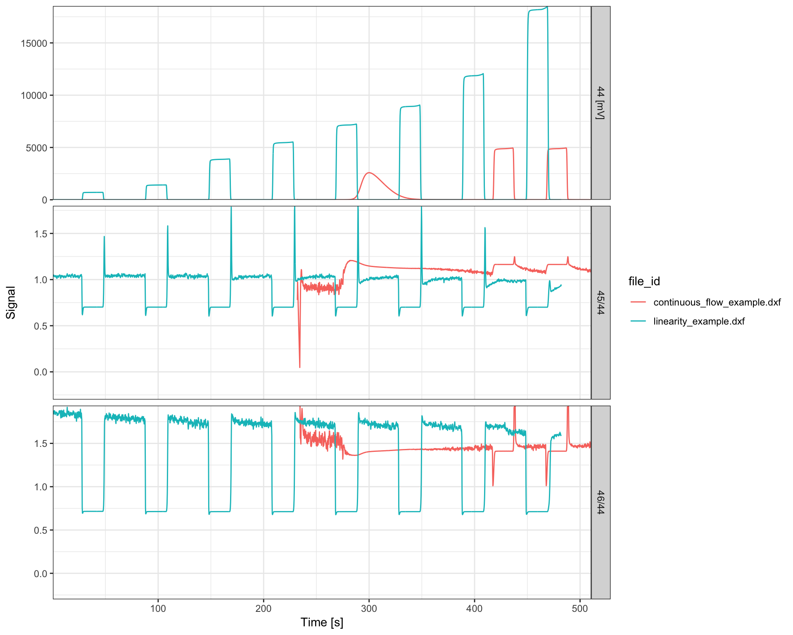
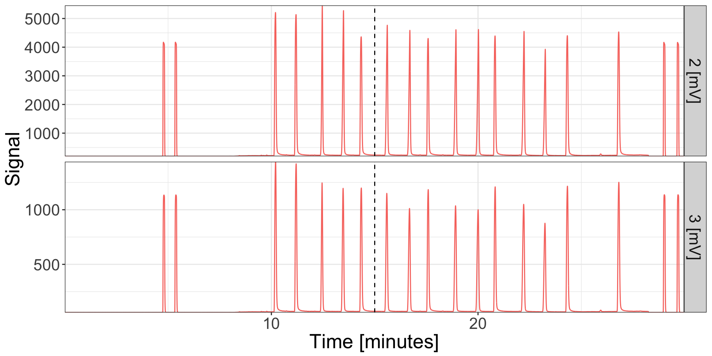

Introduction
Isoreader supports several continuous flow IRMS data formats as well as plotting and data conversion functions specifically for continuous flow data. This vignette shows some of the functionality for continuous flow files. For additional information on operations more generally (caching, combining read files, data export, etc.), please consult the operations vignette.
Note: this vignette is still a work in progress.
# load isoreader package
library(isoreader)Reading files
Reading continuous flow files is as simple as passing one or multiple file or folder paths to the iso_read_continuous_flow() function. If folders are provided, any files that have a recognized continuous flow file extensions within those folders will be processed (e.g. all .dxf, .cf and .iarc). Here we read several files that are bundled with the package as examples (and whose paths can be retrieved using the iso_get_reader_example() function). Note that some of the files (.cf, .dxf) are individual analysis files whereas others (.iarc) are collections of several files.
# all available examples
iso_get_reader_examples() %>% rmarkdown::paged_table()# read a few of the continuous flow examples
iso_files <-
iso_read_continuous_flow(
iso_get_reader_example("continuous_flow_example.cf"),
iso_get_reader_example("linearity_example.dxf"),
iso_get_reader_example("peak_jump_example.dxf"),
iso_get_reader_example("EA_CN_Demo.iarc")
)
#> Info: preparing to read 4 data file(s)...
#> Info: reading and caching file 1/4 '/Library/Frameworks/R.framework/Versions/3.4/Resources/library/isoreader/extdata/continuous_flow_example.cf' with '.cf' reader...
#> Info: reading and caching file 2/4 '/Library/Frameworks/R.framework/Versions/3.4/Resources/library/isoreader/extdata/linearity_example.dxf' with '.dxf' reader...
#> Info: reading and caching file 3/4 '/Library/Frameworks/R.framework/Versions/3.4/Resources/library/isoreader/extdata/peak_jump_example.dxf' with '.dxf' reader...
#> Info: reading and caching file 4/4 '/Library/Frameworks/R.framework/Versions/3.4/Resources/library/isoreader/extdata/EA_CN_Demo.iarc' with '.iarc' reader...
#> unpacking isoprime archieve file...
#> found 1 processing list(s) in .iarc: 'ProcessingList_1'
#> found 2 method(s) in .iarc: 'Method_320', 'Method_77'
#> found 4 sample(s) in .iarc
#> searching processing list 'ProcessingList_1' for gas configurations...
#> found configurations for 'CO', 'SO2', 'CO2', 'H2', 'N2'
#> processing sample '6632_WSL-2 wood' (IRMS data '133.hdf5', '135.hdf5')
#> processing sample '6605_USGS41' (IRMS data '40.hdf5', '43.hdf5')
#> processing sample '6617_IAEA600' (IRMS data '80.hdf5', '82.hdf5')
#> processing sample '6630_GlutamicAcid04' (IRMS data '124.hdf5', '126.hdf5')File summary
The iso_files variable now contains a set of isoreader objects, one for each file. Take a look at what information was retrieved from the files using the iso_get_data_summary() function.
iso_files %>% iso_get_data_summary() %>% rmarkdown::paged_table()
#> Info: aggregating data summary from 7 data file(s)Problems
In case there was any trouble with reading any of the files, the following functions provide an overview summary as well as details of all errors and warnings, respectively. The examples here contain no errors but if you run into any unexpected file read problems, please file a bug report in the isoreader issue tracker.
iso_files %>% iso_get_problems_summary() %>% rmarkdown::paged_table()iso_files %>% iso_get_problems() %>% rmarkdown::paged_table()File Information
Detailed file information can be aggregated for all isofiles using the iso_get_file_info() function which supports the full select syntax of the dplyr package to specify which fields are of interest (by default, all file information is retrieved). The following provides a few examples for how this can be used (the names of the interesting info columns may vary between different file formats):
# all file information
iso_files %>% iso_get_file_info() %>% rmarkdown::paged_table()
#> Info: aggregating file info from 7 data file(s)# select file information
iso_files %>%
iso_get_file_info(
select = c(
# select the Analysis column (keep the name)
Analysis,
# select the time stamp and rename it to `Date & Time`
`Date & Time` = file_datetime,
# select all columns that start with "Id" and rename them id1, id2, etc.
id = starts_with("Id"),
# select all columns that contain "Method"
matches("Method"))
) %>% rmarkdown::paged_table()
#> Info: aggregating file info from 7 data file(s)Resistors
Additionally, some IRMS data files contain resistor information that are useful for downstream calculations (see e.g. section on signal conversion later in this vignette):
iso_files %>% iso_get_resistors_info() %>% rmarkdown::paged_table()
#> Info: aggregating resistors info from 7 data file(s)Reference values
As well as isotopic reference values for the different gases:
# reference delta values without ratio values
iso_files %>% iso_get_standards_info() %>% rmarkdown::paged_table()
#> Info: aggregating standards info from 7 data file(s)# reference values with ratios
iso_files %>% iso_get_standards_info(with_ratios = TRUE) %>% rmarkdown::paged_table()
#> Info: aggregating standards info from 7 data file(s)Data & Plots
The raw data read from the IRMS files can be retrieved similarly using the iso_get_raw_data() function. Most data aggregation functions also allow for inclusion of file information using the include_file_info parameter, which functions identically to the select parameter of the iso_get_file_info function discussed earlier.
# get raw data with default selections (all raw data, no additional file info)
iso_files %>% iso_get_raw_data() %>% head(n=10) %>% rmarkdown::paged_table()
#> Info: aggregating raw data from 7 data file(s)# get specific raw data and add some file information
iso_files %>%
iso_get_raw_data(
# select just time and the m/z 2 and 3 ions
select = c(time.s, v2.mV, v3.mV),
# include the Analysis number fron the file info and rename it to 'run'
include_file_info = c(run = Analysis)
) %>%
# look at first few records only
head(n=10) %>% rmarkdown::paged_table()
#> Info: aggregating raw data from 7 data file(s), selecting data columns 'c(time.s, v2.mV, v3.mV)', including file info 'c(run = Analysis)'Chromatograms
Plotting the raw data (i.e. the mass chromatograms) can be done either with the generic iso_plot_raw_data() function for a simple plot with default parameters, or directly using the continuous flow specific iso_plot_continuous_flow() which can be highly customized. Note that the following plot shows the data from all files in their originally recorded signal intensity units. For examples of how to convert to a common unit, see the section on Signal conversion further down.
iso_files %>% iso_plot_continuous_flow_data()
All customization options are described in the function help (?iso_plot_continuous_flow_data) and include, for example, plotting only a specific subset of masses (which will omit data from files that don’t include this mass):
iso_files %>%
# plot just masses 2, 44 and 45
iso_plot_continuous_flow_data(
data = c("2", "44", "45")
)
Isotope ratios
Raw data typically only includes ion signals but isotope ratios are often needed to calculate and visualize the data. For this purpose, isoreader provides a dynamic ratio calculation function (iso_calculate_ratios()) that accepts any combination of masses, here demonstrated for the standard CO2 ratios \(\frac{46}{44}\) and \(\frac{45}{44}\). Additionally, the following example demonstrates how the filter parameter can be used to exclude plotting artifacts (here e.g. the extreme ratio values seen right after the magnet jump).
iso_files <-
iso_files %>%
# calculate 46/44 and 45/44 ratios
iso_calculate_ratios(ratios = c("46/44", "45/44"))
#> Info: calculating ratio(s) in 7 data file(s): 46/44, 45/44
iso_files %>%
iso_plot_continuous_flow_data(
# visualize ratios along with main ion
data = c("44", "45/44", "46/44"),
# plot all masses but ratios only 0 to 2 to omit peak jump artifacts
filter = category != "ratio" | dplyr::between(value, 0, 2)
)
Time conversion
Most continuous flow data is reported in time units of seconds but this is not always the most useful unit. Isoreader provides easy time scaling functionality that will work for all standard time units (minutes, hours, days, etc.) regardless of which time units individual isofiles were initially recorded in.
iso_files <-
iso_files %>%
# convert to minutes
iso_convert_time(to = "minutes")
#> Info: converting time to 'minutes' for 7 continuous flow data file(s)
iso_files %>%
# plot masses 2 and 3
iso_plot_continuous_flow_data(data = c(2, 3))
In this context, another useful customization option of the plotting function is the option to select a specific time window (in any time units, regardless of what is plotted), and the possibility to adjust plot aesthetics such as color, linetype, and paneling:
iso_files %>%
# calculate 3/2 ratio on the file
iso_calculate_ratios("3/2") %>%
iso_plot_continuous_flow_data(
# replot masses 2 and 3 together with the ratio for a specific time window
data = c("2", "3", "3/2"),
time_interval = c(10, 13),
time_interval_units = "minutes",
# adjust plot aesthetics to panel by masses vs. ratios and color by traces
panel = category,
color = data
)
#> Info: calculating ratio(s) in 7 data file(s): 3/2
Signal conversion
Likewise, isoreader can convert between different signal units. This is particularly useful for comparing data files from different mass specs that record signals differentally. The earlier plot of mass 44 illustrated this scenario where some data was recorded in mV and some in nA. Voltages and currents can be scaled within each unit without restriction and with any valid SI prefix (e.g. from mV to V or nA to pA), however, for conversion from voltage to current or vice-versa, the appropriate resistor values need to be provided or be available from the data files themselves. The following is an example of scaling from voltage to current with the resistor values automatically read from the original data files (see file information section for details). Notice how the mass 44 signal is now in the same units for all files:
iso_files %>%
# convert all signals to nano ampere
iso_convert_signals(to = "nA") %>%
# re-plot same plot as earlier
iso_plot_continuous_flow_data(
data = c("44", "45/44", "46/44"),
filter = category != "ratio" | dplyr::between(value, 0, 2)
)
#> Info: converting signals to 'nA' for 7 continuous flow data file(s) with automatic resistor values from individual iso_files
Plot styling
Since all isoreader plots are standard ggplot objects, they can be modified with any ggplot commands. For example to modify the themes:
library(ggplot2)
iso_files %>%
# replot
iso_plot_continuous_flow_data(data = c(2,3)) +
# add vertical dashed line (ggplot functionality)
geom_vline(xintercept = 15, linetype = 2) +
# modify plot styling (ggplot functionality)
theme(text = element_text(size = 20),
legend.position = "none")
Data Processing
The isoreader package is intended to make raw stable isotope data easily accessible. However, as with most analytical data, there is significant downstream processing required to turn these raw intensity chromatograms into peak-specific, properly referenced isotopic measurements. This and similar functionality will be part of the isoprocessor package which takes isotopic data through the various corrections in a transparent, efficient and reproducible manner.
That said, most vendor software also performs some of these calculations and it can be useful to be able to compare new data reduction procecures against those implemented in the vendor software. For this purpose, isoreader retrieves vendor computed data tables whenver possible, as illustrated below.
Vendor Data Table
As with most data retrieval funtions, the iso_get_vendor_data_table() function also allows specific column selection (by default, all columns are selected) and easy addition of file information via the include_file_info parameter (by default, none is included).
# entire vendor data table
iso_files %>% iso_get_vendor_data_table() %>% rmarkdown::paged_table()
#> Info: aggregating vendor data table without units from 7 data file(s)# get specific parts and add some file information
iso_files %>%
iso_get_vendor_data_table(
# select peak number, ret. time, overall intensity and all H delta columns
select = c(Nr., Rt, area = `rIntensity All`, matches("^d \\d+H")),
# include the Analysis number fron the file info and rename it to 'run'
include_file_info = c(run = Analysis)
) %>% rmarkdown::paged_table()
#> Info: aggregating vendor data table without units from 7 data file(s), including file info 'c(run = Analysis)'# the data table also provides units if included in the original data file
# caution however: it may require changes to the `select` parameter
iso_files %>%
iso_get_vendor_data_table(
with_units = TRUE,
# select peak number, ret. time, overall intensity and all H delta columns
select = c(Nr., matches("^Rt"), matches("rIntensity All"), matches("^d \\d+H")),
# include the Analysis number fron the file info and rename it to 'run'
include_file_info = c(run = Analysis)
) %>% rmarkdown::paged_table()
#> Info: aggregating vendor data table with units from 7 data file(s), including file info 'c(run = Analysis)'For expert users: retrieving all data
For users familiar with the nested data frames from the tidyverse (particularly tidyr’s nest and unnest), there is an easy way to retrieve all data from the iso file objects in a single nested data frame. Use the include_file_info, include_raw_data, and include_vendor_data_table parameters to specify which columns to include. By default, everything is included:
all_data <- iso_files %>% iso_get_data()
#> Info: aggregating all data from 7 data file(s)
all_data %>% rmarkdown::paged_table()Data Export
At the moment, isoreader supports export of all data to R Data archives, Excel, and the Feather file format (a Python/R cross-over format). R Data archives can also be convientiently read back using the same iso_read_continuous_flow command used for raw data files. Note that the different export methods have similar syntax and append the appropriate file extension for each type of export file.
# export to R data archive
iso_files %>% iso_export_to_rda("iso_files_export")
#> Info: exporting data from 7 iso_files into R Data Archive 'iso_files_export.cf.rda'
# read back the exported R data archive
iso_read_continuous_flow("iso_files_export.cf.rda")
#> Info: preparing to read 1 data file(s)...
#> Info: reading file 1/1 'iso_files_export.cf.rda' with '.rda' reader...
#> Info: loaded data for 7 data files from R Data Archive - checking loaded files for content consistency...
#> Data from 7 continuous flow iso files:
#> # A tibble: 7 x 6
#> file_id raw_data file_info method_info vendor_data_tab… file_path
#> <chr> <chr> <chr> <chr> <chr> <chr>
#> 1 continu… 8605 time… 19 entri… standards,… 19 rows, 25 col… /Library/Fra…
#> 2 lineari… 2307 time… 14 entri… standards,… 8 rows, 40 colu… /Library/Fra…
#> 3 peak_ju… 2435 time… 19 entri… standards,… 6 rows, 60 colu… /Library/Fra…
#> 4 6632_WS… 1952 time… 15 entri… no method … no vendor data … /Library/Fra…
#> 5 6605_US… 2387 time… 15 entri… no method … no vendor data … /Library/Fra…
#> 6 6617_IA… 1796 time… 15 entri… no method … no vendor data … /Library/Fra…
#> 7 6630_Gl… 2386 time… 15 entri… no method … no vendor data … /Library/Fra…# export to excel
iso_files %>% iso_export_to_excel("iso_files_export")
#> Info: exporting data from 7 iso_files into Excel 'iso_files_export.cf.xlsx'
# data sheets available in the exported data file:
readxl::excel_sheets("iso_files_export.cf.xlsx")
#> [1] "raw data" "file info" "method info"
#> [4] "vendor data table" "problems"# export to feather
iso_files %>% iso_export_to_feather("iso_files_export")
#> Info: exporting data from 7 iso_files into .cf.feather files at 'iso_files_export'
# exported feather files
list.files(pattern = ".cf.feather")
#> [1] "iso_files_export_file_info.cf.feather"
#> [2] "iso_files_export_method_info-resistors.cf.feather"
#> [3] "iso_files_export_method_info-standards.cf.feather"
#> [4] "iso_files_export_problems.cf.feather"
#> [5] "iso_files_export_raw_data.cf.feather"
#> [6] "iso_files_export_vendor_data_table.cf.feather"